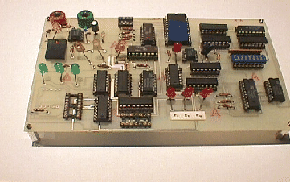
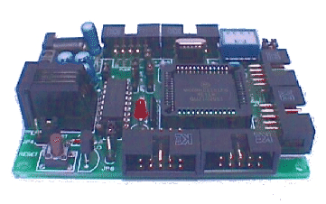
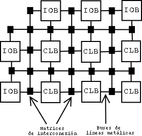
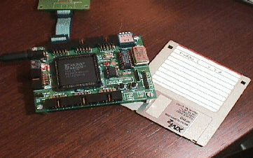

Permission is granted to copy, distribute and/or modify this document under the terms of the GNU Free Documentation License, Version 1.1 or any later version published by the Free Software Foundation with no Invariant Sections, no Front-Cover Texts, and no Back-Cover Texts. A copy of the license can be found in GNU Free Documentation License.
En este artículo para x-ezine se realiza una introducción al mundo de las FPGA's, describiendo de una forma muy genérica los principios y fundamentos en los que se basan, y cómo gracias a los lenguajes de descripción hardware, el proceso de diseño hardware se parece cada vez más al desarrollo software, pudiéndose aplicar al hardware técnicas y conceptos que hasta ahora sólo estaban en el campo de la programación, como por ejemplo la idea de hardware abierto. Todavía existen obstáculos para conseguirlo, pero no son insalvables, a medio plazo.
Todo lo indicado en este artículo sólo hace refencia a circuitos digitales. Para el desarrollo de electrónica analógica hay que recurrir todavía a la ingeniería electrónica tradicional.
El diseño hardware siempre se ha considerado como algo oscuro y difícil, y la tendencia de la gente ``inquieta'', con ganas de hacer cosas, es recurrir al software. Con sólo un ordenador y algunas herramientas software, como compiladores y entornos de desarrollo, se pueden crear multitud de aplicaciones nuevas y sorprendentes. Esto además se ve reforzado por la aparición de sistemas operativos libres, como Gnu/Linux o FreeBSD y la gran cantidad de herramientas libres disponibles para los desarrolladores.
Ahora vayamos al extremo opuesto: los desarrolladores hardware. Uno en su casa no puede hacer grandes cosas. Primero porque es necesario tener las herramientas adecuadas: osciloscopios, fuentes de alimentación, generadores de onda, polímetros... segundo porque hay que encontrar los componentes, comprarlos y finalmente montarlos. La depuración de los circuitos se puede convertir en un verdadero infierno: ¿Qué es lo que está fallando? ¿Las soldaduras? ¿el diseño? ¿Los componentes? ¿No nos habremos cargado algo al soldar o al conectarlo a una tensión superior a la indicada?
>
Figura 1:Un circuito digital, montado sbre una placa de circuito impreso. ¿Cómo se puede compartir este diseño?
...Y finalmente, cuando tenemos el prototipo terminado, simplemente tenemos eso, un prototipo. Y si queremos compartir nuestro diseño con una ``comunidad hardware'', es necesario que al menos uno de los integrantes reproduzca el diseño, teniendo que volver a pasar por muchos de los problemas con los que nos hemos encontrado.
Resulta que hay mucha gente aficionada a la electrónica digital, pero es difícil crear una comunidad similar a la del software, en la que lo aportado por uno pueda ser revisado, comprobado y ampliado por los demás, sin tener que invertir nada de dinero, sólo tiempo.
En la figura anterior se muestra un ``prototipo'' de un circuito que el autor de este artículo tuvo que realizar como práctica de la asignatura de electrónica digital, en segundo curso de Teleco. Se trata de un transmisor de datos que serie que añade 3 bits de redundancia para hacer la transmisión más segura y detectar errores. El circuito también incluye el receptor, que utiliza los bits de redundancia para comprobar si el byte recibido es correcto o no. Este diseño se le puede pasar a otro ingeniero para que lo pruebe, modifique, etc... pero en cualquier caso se lo tendrá que construir, e invertir tiempo y dinero.
Con la aparición de los microcontroladores, la electrónica, o mejor dicho, el diseño electrónico ha ido evolucionando hacia el mundo del software. Es más fácil tener diseñado un pequeño hardware basado en un microcontrolador, como si fuese un ordenador, que diseñarse la aplicación a medida. La funcionalidad de estos circuitos la da el software que lo ejecuta y no el circuito en sí. Como ejemplo, la tarjeta CT6811, basada en el microcontrolador 6811 de motorola.
Si se utiliza para gobernar un robot, es el software (el programa que ejecuta) el que determina el comportamiento del robot, y no la electrónica que lleva. De esta manera, parte del problema se ha desviado hacia el software. Si la comunidad ``hardware'' dispone de una tarjeta similar, sólo tendré que enviarles el software para que su circuito se comperte exactamente igual que el mío. En la figura siguiente, hay una foto de la CT6811.
Pero hay otra alternativa... las FPGA's, que permiten diseñar hardware ``puro'' utilizando una metodología de diseño muy parecida a la del software. Todavía no son muy populares, pero pueden permitir el que se llegue a formar una comunidad hardware muy parecida a la del software, en la que los diseños se puedan intercambiar con suma facilidad entre los integrantes, y en el que los diseños sólo estén limitados a nuestra imaginación. Y esa idea es la que se quiere transmitir con este artículo.
>
Figura 2:Tarjeta CT6811. Basada en el microcontrolador 6811, puede ejecutar un software.
Todo circuito digital es en realidad una ``caja'' en la que hay unas entradas y unas salidas. Un microprocesador es también un circuito digital, en el que hay entradas de datos , entradas de control (el programa) y unas salidas.
¿Y qué es lo que hacemos cuando estamos diseñando un circuito digital, como por ejemplo un circuito combinacional que permita a un robot seguir una línea negra?. Tenemos unas entradas, los sensores, que indican si la superficie por la que pasa el robot es blanca o negra, y unas salidas, que mueven los motores hacia adelante, atrás o los dejan parados.
Las salidas (el movimiento del robot) debende de las entradas (la lectura de los sensores). Utilizando las técnicas de diseño de circuitos combinacionales, como por ejemplo tablas de verdad o el álbegra de Boole, obtenemos una función booleana que nos relaciona las entradas con las salidas.
Esta función la dibujamos empleando puertas lógicas, con lo que obtenemos el circuito, que al final no es más que la unión de diferentes tipos de puertas básicas: NOT, AND, OR, XOR, NAND...
El siguiente paso es ir a la tienda y comprar los chips necesarios. Además compramos una placa de puntos donde colocar los chips para unirlos con cables, o en su caso realizamos el montaje en una placa de circuito impreso, como en el ejemplo de la primera figura. Lo hacemos, lo ``depuramos'' y ya tenemos nuestro robot siguiendo la línea negra.
¿Pero qué pasaría si los componentes básicos estuviesen integrados en un chip mucho mayor en el que pudiésemos especificar cómo se tienen que unir? Esa es la idea detrás de las FPGA's. Son chips que tienen unos componentes básicos que se pueden ``unir'' según nuestras necesidades, es decir, es un chip que lo podemos ``configurar'' para que tome la forma del circuito que nosotros queremos diseñar. Esta configuración se encuentra almacenada en una memoria ram interna, y se carga desde el exterior del chip. De igual forma que en los microcontroladores se carga ``software'', en las FPGA's se carga la ``configuración'' que determina en qué circuito se va a ``convertir''.
Una FPGA's es un chip que según cómo lo configuremos, podemos realizar cualquier circuito digital. Según que utilicemos una FPGA más grande, con más recursos internos, podremos implementar diseños más complejos. Pero al final tenemos una manera de poder crear diseños digitales sin tener que utilizar componentes externos. Y lo interesante es que una vez configurada la FPGA, lo que tenemos en su interior es hardware.
¿Y cual es la estructura interna que hace esto posible?. Las FPGA's tienen tres tipos de componentes en su interior:
CLB's
IO's
Red de interconexión
>
Figura 3:Estructura de una FPGA
Los CLB's (Bloques lógicos configurables) son lo ``ladrillos'' básicos. Se encuentran distribuidos uniformemente por todo el area de la FPGA y todos son idénticos. Dependiendo del tipo de FPGA, estos blóques lógicos tienen unos componentes u otros, pero básicamente tienen latches, multiplexores y pequeñas memorias para implementar funciones combinacionales (lookup tables). Estos bloque son configurables, estableciéndose qué elementos se conectan con cuales y qué funciones combinacionales realiza, si es que realiza alguna.
Los IOB's (bloques de entrada/salida) son una especie de CLB especializado, que se encuentran junto a los pines del chip y tienen la función de interconectar la lógica interna con el exterior.
La red de interconexión es un conjunto de caminos formados por líneas metálicas y matrices de interconexión (magic boxes) que permiten la conexión entre CLB's y CLB's con los IOB's.
En la figura anterior se muestra gráficamente la estructura de la FPGA. Los rectángulos negros representan las matrices de interconexión, a las que llegan buses de líneas metálicas. En el interior de estas ``cajas'' se configuran las conexiones de las diferentes líneas. Los bloques exteriores son los IOB's y lo interiores los CLB's.
Todas las funciones lógicas, multiplexores, decodificadores, biestables... se implementan utilizando los componentes internos de los CLB's. Cuanto mayor sera nuestro circuito a diseñar, mayor cantidad de CLB's necesitaremos. A continuación es necesario establecer las conexiones entre todos los CLB's y con el exterior, a través de los IOB's. Es el software el que realiza esto por nosotros, convirtiendo nuestro diseño en un fichero de configuración para la FPGA (Bitstream).
La metodología de diseño es similar a la cualquier sistema digital, salvo que al final obtenemos un fichero ``ejecutable'' que se lo podemos enviar a la FPGA para que se ``reconfigure'', implementando así nuestro diseño.
Primero hay que tener una descripción del circuito a realizar. Tradicionalmente en las ingenierías se realizan planos o esquemas para esta descripción, de forma similar a como un arquitecto diseña un edificio. Sin embargo es posible realizar una descripción del hardware utilizando algún lenguaje de descripción hardware, como VHDL o Verilog (Como veremos en el apartado siguiente).
Con esta descipción se pueden realizar ``simulaciones'' del circuito, para comprobar que lo hemos diseñado correctamente y que hace lo que queriamos que hiciese. Se volverá a modificar la descripción (esquemas o programa) hasta que la simulación sea satisfactoria.
Hasta aquí sólo hemos utilizado el ordenador, y no hemos tenido que tocar Hardware. Sin embargo en el caso del software, la propia ``simulación'' es la ejecución del programa. Vemos directamente el resultado de nuestro programa y vamos modificando el código fuente hasta que se eliminen los bugs.
En el caso del hardware hay que construir el circutio. Y aquí es donde vienen las FPGA's en nuestra ayuda. A partir de la especificación hardware y utilizando un ``compilador'' especial, obtenemos un fichero binario, llamado bitstream que contiene toda la información necesaria para configurar la FPGA. Este fichero, que es el equivalente a un programa ejecutable en el caso del software, es el que hay que cargar en la FPGA. Cargamos este fichero en la FPGA y ¡¡Listo!!! Ya tenemos el hardware que queríamos situado en el interior de un chip. No hemos tenido que soldar, ni comprar componentes, ni perder tiempo haciendo un prototipo. Ahora los cambios en el diseño se pueden hacer igual de rápidos que en el caso de software. Sólo hay que cambiar la especificación del diseño, volver a ``compilar'' y reconfigurar la FPGA con el nuevo bitstream generado.
La especificación de un circuito hasta ahora sólo se hacía de una manera: utilizando esquemas gráficos, en los que cada símbolo representa un componente o elemento lógico: multiplexores, puertas lógicas, otros chips...
Existe otra manera de describir un circuito: utilizando los llamados lenguajes de descripción hardware. Existen varios: VHDL, Verilog, Handle C, JBits... La ventaja de estos lenguajes es que además de permitir describir el circuito, permiten definir bancos de pruebas (testbench), que son muy útiles para la simulación y la depuración.
En el ejemplo del diseño del ``cerebro'' del robot seguidor de línea, crearíamos un programa usando alguno de los lenguajes de descripción hardware, como por ejemplo el VHDL, y que podríamos llamar rastreador.vhd. Además de ello definiríamos los estímulos de entrada que queremos que apliquen durante la simulación, para comprobar que las salidas son las correctas. Crearíamos el fichero test1.vhd. Este banco de pruebas sólo nos sirve para la simulación, no formará parte del diseño final.
En la simulación lo que ``vemos'' son los estímulos de entrada y sus correspondientes salidas. Para diseños no muy complejos, se utilizan herramientas gráficas que dibujan las señales, y nosotros, como diseñadores, comprobamos que efectivamente las salidas son las esperadas. También es posible que sea el propio banco de pruebas el que compruebe si las salidas son correctas o no.
Una vez simulado y depurado nuestro diseño, utilizamos un ``Sintetizador'' (lo que antes hemos llamado genéricamente compilador), que a partir del fichero fuente rastreador.vhd nos creará el ``ejecutable'' (Bitstream) rastreador.hex. Será este fichero el que descarguemos en la FPGA, pudiendo comprobar en ``la realidad'' si el circuito funciona o no. Podremos cargar tantas veces como queramos. Una vez que estemos contentos con el diseño y lo queramos dejar ``autónomo'' del PC, lo grabamos en una memoria eeprom serie, y se configura la FPGA (por unos pines determinados) para que se cargue a través de este memoria, en vez desde el PC. Ya tenemos nuestro circuito terminado y funcionando!!!!!!!
Para el lector inquiero, que quiera ver qué pinta tiene el código HTML, se muestra a continuación un programa en VHDL que genera un contador de 11 bits, y que ha sido empleado por el autor como parte del proyecto Labobot
------------------------------
- contador.vhd Juan Gonzalez. Oct-2002 -
- Licencia GPL. -
------------------------------
- PROYECTO LABOBOT -
------------------------------
- Contador de 11 bits -
- -
- Entradas: clk : Reloj -
- reset : Puesta a cero asíncrona (Nivel Alto) -
- Salidas: -
- -q : Datos de salida -
------------------------------
library ieee;
use ieee.std_logic_1164.all;
use ieee.std_logic_unsigned.all;
entity contador is
port (clk : in std_logic; - Reloj
reset : in std_logic;
q : out std_logic_vector (10 downto 0)); -Salida
end contador;
architecture beh of contador is
begin
output: process(clk,reset)
variable cuenta : std_logic_vector(10 downto 0);
begin
- Actualizar la cuenta
if (reset='1') then - Reset asíncrono
cuenta:=(others=>'0'); - Inicializar contador
q<=cuenta;
elsif (clk'event and clk='1') then - Flanco de subida en reloj
cuenta:=(cuenta+1); - Incrementar contador
q<=cuenta;
end if;
end process;
end beh;
Primero se indica la ``entidad'' hardware que se quiere construir: algo que se llama contador y que tiene dos entradas, una de reloj (clk) y otra de reset, y como salidas 11 bits (q). Esto es equivalente a definir la ``cabecera'' de una función en C.
A continuación se especifica la ``Arquitectura'' de la entidad que sea ha definido, lo que es equivalente a la ``implementación'' en el mundo del software.
Al lector le puede parecer ``extraño'', pero este código describe perfectamente un contador de 11 bits. El sintentizador entiende este código y ``sabe'' que tiene que generar un hardware con 2 entradas, y 11 salidas, y que en el interior estos bits se incrementan con cada flanco de subida en la señal de reloj. Interesante, ¿verdad?
Podemos ver que usando FPGA's, el diseño hardware se acerca mucho al del software. En el ejemplo del robot, nuestro circuito es en realidad un fichero, rastreadores.vhd, que contiene el fichero fuente en VHDL. Utilizando un ``Sintetizador'' obtenemos el fichero Ejecutable para la FPGA que estemos usando.
Observemos el paralelismo con el software (software/hardware):
Para poder desarrollar software necesitamos tener un ordenador, donde generaremos y compilaremos el código fuente, y posiblemente donde probemos el ejecutable. Para poder desarrollar hardware necesitamos un ordenador, donde editaremos, simularemos y sitentizaremos el hardware y una placa de desarrollo con una FPGA, donde ``cargaremos'' nuestro diseño.
Existe un fichero ``Fuente'' que contiene toda la información de lo que queremos hacer
Existe un fichero final ``ejecutable'' que es entendido por la CPU/FPGA empleada (ejecutable/bitstream)
Existe una herramienta que convierte los ficheros fuente en ejecutables: compilador/sintetizador.
Podemos tener ``librerías'' lo que nos permite hacer programas/diseños más complejos, sin entrar en detalles sobre cómo está implementación de las librerías.
Podemos emplear repositorios (CVS) (proyectos software/proyectos hardware)
Y puesto que el hardware al final es un fichero fuente, aparecen las mismas situaciones que en el software:
Una empresa o usuario puede ofrecer o vender ``librerías'' hardware, pero en un formato binario, sin dar las fuentes. O también puede vender un diseño final (bitstream) que hace una tarea determianda.
Pero también pueden aparecer diseños en los que las fuentes estén disponibles y se nos permita copiarlas, modificarlas y distribuirlas. ¡¡Esto sería una aplicación de la GPL al hardware!!
A partir de las fuentes y con un sintetizador, podemos generar los Bitstreams... pero estos sintetizadores (que sí son software) pueden ser propietarios o libres, lo mismo que los compiladores pueden ser libres (GCC) o propietarios (Visual C++).
Cualquier fichero fuente lo podemos meter ``dentro'' de una FPGA, si disponemos del sintetizador correspondiente para esa FPGA. Lo mismo que en el software existen multitud de CPU's, en el hardware existen multitud de FPGA's. Cada bitstream sólo vale para la FPGA que fué generada.
No cabe duda de que el mundo del hardware es muy amplio. La utilización de FPGA's se restringe sólo al campo de los sistemas digitales, y si estamos haciendo una aplicación muy específica, habrá que construirse una placa final que incluya la FPGA, conectores, alimentación, etc... Sin embargo, si disponemos de una placa entrenadora, nadie nos impide que podamos desarrollar nuevos componentes hardware, como por ejemplo UARTS, temporizadores, controladores de vídeo, coprocesadores, CPUs... ¡Sí! ¡CPU's! Usando FPGA's podemos diseñar CPUs, descritas mediante un fichero fuente, y que se convierten en ``reales''. En nuestra casa, tranquilamente podremos diseñar o modificar CPU's!!!!!! Esto hace sólo unos años era totalmente impensable!!!
Por ello cabe preguntarse... ¿No sería posible crear una comunidad de desarrolladores hardware en la que se intercambien los diseños como programas fuente, igual que las comunidades de software libre? Yo hago un diseño, como por ejemplo una CPU muy simple, y la publico bajo licencia GPL. Otro usuario la puede utilizar, o la puede modificar, devolviendo esas modificaciones a la propia comunidad. Y este proceso es exactamente igual que en el software. Se entregan los ficheros fuentes y se obtienen ficheros fuente. Además cada usuario, si dispone de los sintetizadores adecuados puede probar el diseño en la ``realidad'' sin tener que construir ningún circuito.
¿No avanzaría el hardware más rápido? ¿No dejaríamos los diseñadores hardware de tener que reinventar la rueda? ¿No sería ideal para el mundo académico el tener una ``Distribución hardware'', en la que se encuentre recopilados, todos los diseños libres, junto con sus documentaciones, howtos, FAQ's, etc?. Esto existe, o más bien está empezando a existir.
Lo apuntado en el apartado anterior, la existencia de un hardware libre (o también llamado hardware abierto) es ya una realidad, sin embargo está todavía en un estadio muy primitivo. No ha hecho más que empezar. Y aquí se apuntan algunas de las causas por las que eso es así:
Los simuladores/sintetizadores profesionales son propietarios, para entornos windows y caros.
Existen simuladores libres, sin embargo todavía están muy verdes.
No hay ningún sintetizador libre. Para generar el bitstream y cargarlo en la FPGA es necesario recurrir a herramientas propietarias, que no han sido portadas a Linux todavía.
Las placas entrenadoras son caras y difíciles de conseguir por un estudiante.
No cabe duda de que estas son unas limitaciones importantes, sobre todo la NO existencia de un sintetizador libre. ¿Qué sería de Linux si no existiese el GCC? Richard Stallman lo vió claramente y por ello el compilador de C fue una de las primeras herramientas que se desarrollaron (Además de su famoso editor de texto EMACS), todo bajo licencia GPL.
Y esta es una limitación muy importante porque los que sintetizadores que se encuentran son los desarrollados por los propios fabricantes de FPGA's, que obviamente son propietarios. Pero hay que añadir la dificultad de que no está publicada toda la información sobre el ``interior'' de las FPGA's lo que hace muy difícil el que se puedan crear compiladores libres. Tampoco están publicados los algoritmos empleados por estos sintetizadores para la generación del Bitstream, que no es algo trivial.
Son muchos los obtáculos que hay para el desarrollo del hardware libre, sin embargo, estoy seguro de que se irán consiguiendo con el tiempo. El Software libre a tardado más de 20 años en llegar a ser lo que es hoy en día...
Y con la idea de avanzar un poco más hacia el hardware libre, y también por sus implicaciones en la docencia, he desarrollado, junto con dos autores más, la placa JPS, basada en la FPGA de la familia 4000 de Xilinx. El objetivo es disponer de una plataforma de trabajo profesional, muy barata, y que cualquiera la pueda construir. Por ello todos los esquemas, circuito impreso y ficheros GERBER para su fabricación industrial están bajo una licencia abierta, permitiendo a cualquier persona el poder copiarla, modificarla, fabricarla, venderla y distribuirla.
La placa está terminada y funciona correctamente. Sin embargo todavía quedan muchas cosas por hacer: documentación, programas ``hardware'' de ejemplo, software en el PC para cargar la FPGA desde Linux, sin usar el software propietario de Xilinx, etc. Cualquier colaboración será bienvenida :-)
En la figura siguiente se muestra el aspecto de la tarjeta JPS.
>
Figura 4:La placa JPS
Hasta ahora la idea de hardware libre o abierto no era posible, por la propia naturaleza del hardware, y la imposibilidad de distribuir este hardware a ``coste cero'' (construir el diseño que ha hecho otro cuesta tiempo y dinero, lo que reduce el número de personas que lo van a hacer). Con la aparición de los lenguajes de descripción hardware y sobre todo, la posibilidad de sintetizar este hardware en una FPGA, se eliminan muchas de las diferencias entre hardware y software, convirtiendo los diseños digitales en ``programas fuente'' que se pueden copiar y probar muy fácilmente.
Esto abre la posibilidad a la aparición del ``hardware libre'', y que se desarrolle una comunidad hardware que vaya creando su propia distribución hardware.
La mayoría de las herramientas software necesarias: simuladores y sintetizadores, son todavía propietarios y para una única plataforma (normalmente Windows) lo que enlentece el crecimiento del hardware libre. También contribuye a ello el que no existan tarjetas entrenadoras con FPGA's que sean asequibles.
La tarjeta JPS es un intento de acelerar este proceso, permitiendo a los interesados el disponer de una placa entrenadora sobre la que desarrollar hardware.
El hardware libre en general, y las FPGA's en particular tienen mucho potencial a nivel docente. Las prácticas de electrónica digital de cualquier universidad, que ahora se están realizando usando tecnología TTL, se podrían desarrollar como programas en un lenguaje de descripción hardware y luego probarlo en una placa entrenadora. Esto es ya una realidad en algunas universidades como en la Escuela Superior de Informática de la Universidad Autónoma de Madrid, en la que se imparte el lenguaje VHDL, y se propone a alumnos de tercero el realizar como práctica un microprocesador... y que gracias a las FPGA's se puede convertir en un microprocesador ``real'', que se puede tocar, programar y usar en aplicaciones finales.
Tarjeta de desarrollo basada en el 68hc11 de Motorola. http://www.microbotica.es/ct6811.htm
Proyecto Labobot. Utilización de una FPGA para mover unas minicámaras. http://www.ii.uam.es/laboweb/LabWeb/index.php3?seccion=1=5
Tarjeta JPS. http://www.iearobotics.com/personal/juan/doctorado/jps-xpc84/jps-xpc84.html
Empresa Xilinx. Fabrica y comercializa FPGA's. http://www.xilinx.com/
FreeHVDL. Un compilador de VHDL libre. http://www.freehdl.seul.org/
OpenCores, un repositorio de hardware abierto. http://www.opencores.org/